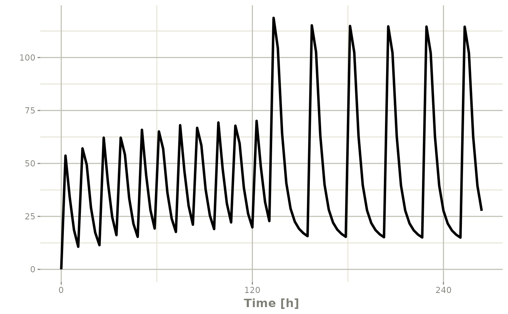
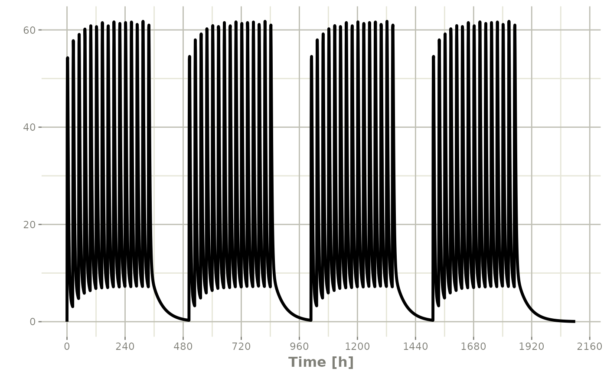
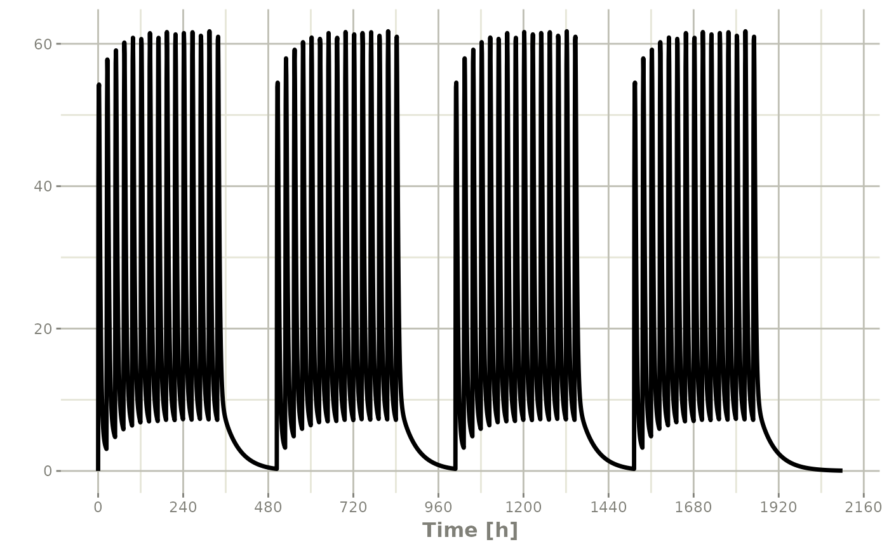

Repeat an rxode2 event table
Arguments
- x
An rxode2 event table
- times
Number of times to repeat the event table
- length.out
Invalid with rxode2 event tables, will throw an error if used.
- each
Invalid with rxode2 event tables, will throw an error if used.
- n
The number of times to repeat the event table. Overrides
times.- wait
Waiting time between each repeated event table. By default there is no waiting, or wait=0
- id
A integer vector of IDs to add or remove from the event table. If the event table is identical for each ID, then you may expand it to include all the IDs in this vector. All the negative IDs in this vector will be removed.
- samples
How to handle samples when repeating an event table. The options are:
"clear"Clear sampling records before combining the datasets"use"Use the sampling records when combining the datasets
- waitII
This determines how waiting times between events are handled. The options are:
"smart"This "smart" handling of waiting times is the default option. In this case, if the waiting time is above the last observed inter-dose interval in the first combined event table, then the actual time between doses is given by the wait time. If it is smaller than the last observed inter-dose interval, the time between event tables is given by the inter-dose interval + the waiting time between event tables."+ii"In this case, the wait time is added to the inter-dose interval no matter the length of the wait time or inter-dose interval
- ii
When specifying a dose, this is the inter-dose interval for
ss,addlanduntiloptions (described below).- ...
Times or event tables. They can also be one of the named arguments below.
References
Wang W, Hallow K, James D (2015). "A Tutorial on rxode2: Simulating Differential Equation Pharmacometric Models in R." CPT: Pharmacometrics \& Systems Pharmacology, 5(1), 3-10. ISSN 2163-8306, <URL: https://www.ncbi.nlm.nih.gov/pmc/articles/PMC4728294/>.
See also
eventTable, add.sampling,
add.dosing, et,
etRep, etRbind,
rxode2
Examples
# \donttest{
library(rxode2)
library(units)
## Model from rxode2 tutorial
mod1 <-rxode2({
KA=2.94E-01;
CL=1.86E+01;
V2=4.02E+01;
Q=1.05E+01;
V3=2.97E+02;
Kin=1;
Kout=1;
EC50=200;
C2 = centr/V2;
C3 = peri/V3;
d/dt(depot) =-KA*depot;
d/dt(centr) = KA*depot - CL*C2 - Q*C2 + Q*C3;
d/dt(peri) = Q*C2 - Q*C3;
d/dt(eff) = Kin - Kout*(1-C2/(EC50+C2))*eff;
});
#>
## These are making the more complex regimens of the rxode2 tutorial
## bid for 5 days
bid <- et(timeUnits="hr") %>%
et(amt=10000,ii=12,until=set_units(5, "days"))
## qd for 5 days
qd <- et(timeUnits="hr") %>%
et(amt=20000,ii=24,until=set_units(5, "days"))
## bid for 5 days followed by qd for 5 days
et <- seq(bid,qd) %>% et(seq(0,11*24,length.out=100));
bidQd <- rxSolve(mod1, et)
plot(bidQd, C2)

## Now Infusion for 5 days followed by oral for 5 days
## note you can dose to a named compartment instead of using the compartment number
infusion <- et(timeUnits = "hr") %>%
et(amt=10000, rate=5000, ii=24, until=set_units(5, "days"), cmt="centr")
qd <- et(timeUnits = "hr") %>% et(amt=10000, ii=24, until=set_units(5, "days"), cmt="depot")
et <- seq(infusion,qd)
infusionQd <- rxSolve(mod1, et)
plot(infusionQd, C2)
 ## 2wk-on, 1wk-off
qd <- et(timeUnits = "hr") %>% et(amt=10000, ii=24, until=set_units(2, "weeks"), cmt="depot")
et <- seq(qd, set_units(1,"weeks"), qd) %>%
add.sampling(set_units(seq(0, 5.5,by=0.005),weeks))
wkOnOff <- rxSolve(mod1, et)
plot(wkOnOff, C2)
## 2wk-on, 1wk-off
qd <- et(timeUnits = "hr") %>% et(amt=10000, ii=24, until=set_units(2, "weeks"), cmt="depot")
et <- seq(qd, set_units(1,"weeks"), qd) %>%
add.sampling(set_units(seq(0, 5.5,by=0.005),weeks))
wkOnOff <- rxSolve(mod1, et)
plot(wkOnOff, C2)
 ## You can also repeat the cycle easily with the rep function
qd <-et(timeUnits = "hr") %>% et(amt=10000, ii=24, until=set_units(2, "weeks"), cmt="depot")
et <- etRep(qd, times=4, wait=set_units(1,"weeks")) %>%
add.sampling(set_units(seq(0, 12.5,by=0.005),weeks))
repCycle4 <- rxSolve(mod1, et)
plot(repCycle4, C2)

# }
## You can also repeat the cycle easily with the rep function
qd <-et(timeUnits = "hr") %>% et(amt=10000, ii=24, until=set_units(2, "weeks"), cmt="depot")
et <- etRep(qd, times=4, wait=set_units(1,"weeks")) %>%
add.sampling(set_units(seq(0, 12.5,by=0.005),weeks))
repCycle4 <- rxSolve(mod1, et)
plot(repCycle4, C2)

# }